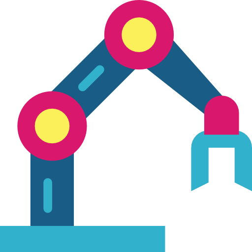

|
Shih-Min Yang I am a Ph.D. student at Örebro University in Sweden, under the supervision of Martin Magnusson, Todor Stoyanov, and Johannes A. Stork. I am working on the DARKO EU project and affiliated with Wallenberg AI, Autonomous Systems and Software Program (WASP). My research aims to enhance learning efficiency for reinforcement learning, using complex robotic manipulation tasks as a practical application. In 2019, I received my master's degree at the Multimedia Lab in NTNU, Taiwan, focusing on computer vision and domain adaptation under the supervision of Mei-Chen Yeh, and subsequently worked as a Research Associate. Before embarking on my doctoral journey, I worked in the industry as a machine learning engineer. Github / Google Scholar / LinkedIn / Email |
{kind=link}
News |
|
 |
Research |

|
Learning Extrinsic Dexterity with Parameterized Manipulation Primitives
Shih-Min Yang, Martin Magnusson, Johannes A. Stork, Todor Stoyanov arXiv preprint, 2023 IROS 2023 Workshop on Leveraging Models for Contact-Rich Manipulation We suggest using hierarchical reinforcement learning with parameterized primitives to solve occluded grasping tasks without the need for complex manual controller design Keywords: Contact-rich manipulation, Hierarchical Reinfocement Learning |
Project |

|
Dynamic Agile Production Robots that Learn and Optimise Knowledge and Operations
DARKO EU Project
Örebro University, TUM, Bosch, University of Pisa, EPFL, University of Lincoln, ACT Operations Research DARKO is innovating agile production robots for efficient and safe intralogistics in warehouses. In this project, I mainly contribute to WP2: 3D Perception and Scene Understanding. |
|
From Website Source |